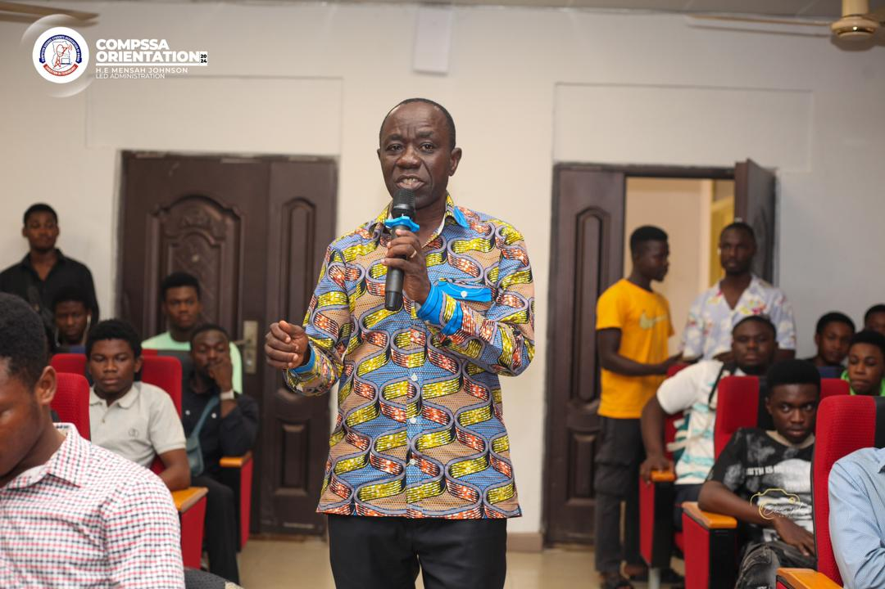

Welcome to our esteemed faculty! at Kumasi Technical University , we take pride in fostering an environment of academic excellence, collaboration, and innovation. As valued members of our educational community, your expertise and dedication play a crucial role in shaping the future. Together, let's inspire and empower our students to reach new heights. Thank you for being an integral part of our academic family!"
Kumasi Technical University is a dynamic institution committed to providing a nurturing and stimulating learning environment. With a rich history of academic achievement, our school is dedicated to cultivating the intellectual, social, and emotional development of every student. We emphasize innovation, inclusivity, and excellence in education. Join us on a journey where curiosity is ignited, knowledge is embraced, and lifelong learning is fostered.
"At Kumasi Technical University's Faculty of Applied Science and Technology, our mission is to empower students with cutting-edge knowledge and practical skills, preparing them to excel in the ever-evolving fields of applied sciences and technology. We are dedicated to fostering a dynamic learning environment that nurtures creativity, critical thinking, and a commitment to solving real-world challenges."
"The Faculty envisions a future where graduates are catalysts for technological advancements and societal progress. We aspire to be a globally recognized hub for applied science education, renowned for innovation, research, and producing skilled professionals who shape industries and contribute to the betterment of our interconnected world."
Founded in 2006, Kumasi Technical University's Faculty of Applied Science and Technology has a rich history of pioneering education in the realms of applied sciences and technology. From its humble beginnings, the faculty has evolved into a dynamic hub of innovation and academic excellence. Over the years, we have consistently adapted to the changing landscape of technology, shaping future leaders and contributing to advancements in various industries. Our journey is marked by a commitment to fostering a passion for learning and a dedication to preparing students for the challenges

On 12th june 2024 Faculty of Applied Science and Tecnology proudly announces the launch of its cutting-edge robotics program, aimed at inspiring students to explore the fascinating world of automation and artificial intelligence. The initiative aligns with our commitment to providing hands-on learning experiences that prepare students for the future.
The program, set to commence on 20th june 2024, will offer students a unique opportunity to delve into robotics, coding, and problem-solving. Spearheaded by Dr Asare Yaw Obeng (Phd), the curriculum emphasizes practical application and creativity.
[Principal/Head of Faculty Name] expressed excitement, stating, "This program exemplifies our dedication to fostering innovation and preparing students for the evolving technological landscape.".Accompanying the news is a sneak peek into the robotics lab, showcasing students engaging in hands-on activities.
Kumasi-ashanti region, ghana, W/A
+233-591-826-475 / +233-345-654-121
Office Hours: Mondays and Wednesdays, 10:00 AM - 12:00 PM
Consultation: By appointment, please email to schedule.